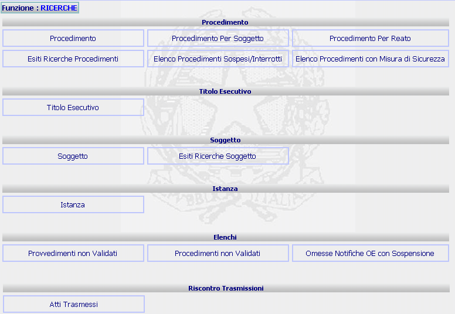

GENERALITA'
RICERCHE: La funzione consente di effettuare diversi tipi di ricerche all’interno del sistema a seconda dei dati in possesso e delle informazioni che si desiderano trovare.
LE MASCHERE VIDEO
La funzione in esame viene realizzata attraverso l'utilizzo della seguente maschera che riporta diversi tipi di ricerche suddivise per tipologia ed in particolare per:
| Procedimento | |
| Titolo Esecutivo | |
| Soggetto | |
| Istanza | |
| Elenchi | |
| Riscontro trasmissione |

COME FARE PER ...
Per eseguire una delle funzioni riportate nella descrizione sui bottoni occorre selezionarla tramite mouse cliccando sul bottone corrispondente.